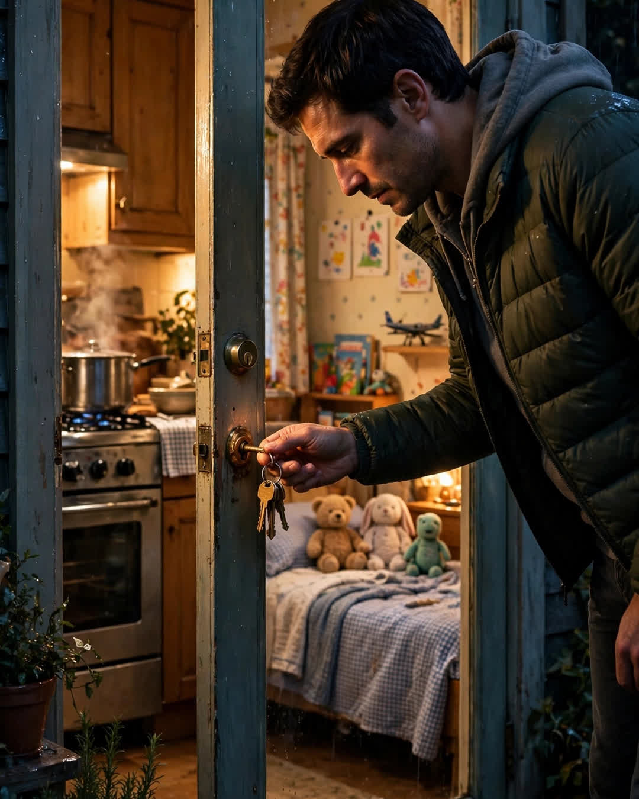

The Spare Key
A Clipp Kaili original story

My parents kept a spare key to their house with my name on it for thirty years — and the night my marriage ended, it was still hanging in the same place.
It lived on a hook inside their garage, on a plain brass ring with a scrap of masking tape that said "Adam" in my father's handwriting. He put it there the week I left for college. "Door's yours," he said, in his gruff, embarrassed way, and then went back to his mower like he hadn't just handed me a promise. I used it in my twenties for surprise visits and free laundry. In my thirties, I mostly forgot it existed.
My marriage did not end in one big explosion. It ended slowly, then all at once — papers signed on a gray afternoon, a quiet apartment half mine, half boxes, and a feeling like the floor of my life had been quietly repossessed. I told my parents over the phone, short and clean, the way you report weather. Mom said, "Okay, baby," in a voice so even I almost believed I'd fooled her.
That night I drove for two hours without deciding to.
I don't remember the highway. I remember the garage light being on. I remember the hook, the brass ring, the tape with my name gone soft at the edges from thirty years of summers. My hand shook so bad it took me three tries to get the key in the back door lock.
The kitchen light was off. The house was quiet. But there was a pot on the stove, still warm, with the lid on — and my old bedroom, when I pushed the door open, was exactly as I had left it at eighteen. The bed made. The trophies. The crack in the ceiling shaped like Florida. A clean towel folded on my dresser that had not been folded in this century by anyone but her.
Mom was asleep in the recliner in the living room, fully dressed, a book open facedown on her chest. She wasn't waiting up. She had gone to sleep in her chair the way she did sometimes, television murmuring. But the soup was on the stove because — and she said this the next morning, over coffee, like she was reporting the most ordinary thing in the world — she had "just had a feeling."
"What kind of feeling?" I asked.
"The kind I've had since you were four and I'd wake up ten minutes before you had a nightmare. Don't make it a thing, Adam." She buttered my toast. "Eat your soup. You look like a fence post."
I stayed for eleven days.
Nobody in that house asked me to explain anything, or be strong, or have a plan by Friday. Dad found projects that needed a second set of hands. Mom fed me like it was her job in the war. On the eleventh morning, I fried my own eggs, loaded my boxes back into my car, and hung the key back on its hook in the garage.
Dad watched me do it. "You could take it with you this time," he said.
"No," I said. "It works better here. It means there's a door."
He nodded like I'd finally said something smart.
People think coming home as a grown man with your life in boxes is a defeat. It isn't. It is a reminder that long before you built a life, somebody built you a door — and kept it unlocked in their hearts for thirty years, against the one night you might need to walk through it without knocking.
Some parents give their children wings.
Mine gave me wings and a key — and soup on the stove, because a mother just had a feeling.
This story is a work of fiction, written to touch hearts and bring families closer.
← Back to all stories